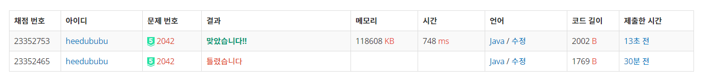

👀 문제
https://www.acmicpc.net/problem/2042
👊 도전
1. 설계
- 세그먼트 트리를 이용한다.
2. 구현 (성공 코드)
1
2
3
4
5
6
7
8
9
10
11
12
13
14
15
16
17
18
19
20
21
22
23
24
25
26
27
28
29
30
31
32
33
34
35
36
37
38
39
40
41
42
43
44
45
46
47
48
49
50
51
52
53
54
55
56
57
58
59
60
61
62
63
64
65
66
67
68
69
70
71
import java.util.*;
import java.io.*;
/**
* @author HEESOO
*
*/
class Main {
static long[] input, tree;
public static void main(String[] args) throws IOException {
BufferedReader br=new BufferedReader(new InputStreamReader(System.in));
StringTokenizer st=new StringTokenizer(br.readLine());
int N=Integer.parseInt(st.nextToken());
int M=Integer.parseInt(st.nextToken());
int K=Integer.parseInt(st.nextToken());
tree=new long[N*4];
input=new long[N+1]; // 인덱스 1부터 사용
for(int i=1;i<=N;i++)
input[i]=Long.parseLong(br.readLine());
init(1, 1, N); // 세그먼트 트리 생성
for(int i=0;i<M+K;i++) {
st=new StringTokenizer(br.readLine());
int a=Integer.parseInt(st.nextToken());
if(a==1) { // b번째를 c로 변경
int b=Integer.parseInt(st.nextToken());
long c=Long.parseLong(st.nextToken());
long diff=c-input[b];
input[b]=c;
update(1, 1, N, b, diff);
}
else { // b~c 합 출력
int b=Integer.parseInt(st.nextToken());
int c=Integer.parseInt(st.nextToken());
System.out.println(sum(1, 1, N, b, c));
}
}
}
public static long init(int node, int left, int right) {
if(left==right) return tree[node]=input[left]; // 리프노드
int mid=(left+right)/2;
// (node)번째 노드 합=왼쪽 자식(2*node) 합+오른쪽 자식(2*node+1) 합
return tree[node]=init(2*node, left, mid)+init(2*node+1, mid+1, right);
}
public static void update(int now, int left, int right, int idx, long diff) {
// now: 현재 노드 위치, left right: 현재 노드의 합 범위, idx: 바꾸고자 하는 노드 인덱스, diff: 더할 값
if(idx<left || idx>right) return; // 현재 범위에 idx가 포함되지 않는다면 종료
// 현재 범위(left~right)에 idx가 포함되는 경우임
tree[now]+=diff;
if(left!=right) { // 아직 탐색할 수 있는 범위가 더 있다면
int mid=(left+right)/2;
update(2*now, left, mid, idx, diff);
update(2*now+1, mid+1, right, idx, diff);
}
}
public static long sum(int now, int left, int right, int rangeA, int rangeB) {
// now: 현재 노드 위치, left right: 현재 노드의 합 범위, rangeA rangeB: 찾아야 할 범위
if(right<rangeA || left>rangeB) return 0; // 찾아야 할 범위를 벗어나면
if(rangeA<=left && right<=rangeB) return tree[now]; // 찾아야 할 범위 안에 들어왔다면 현재 위치의 구간 합 리턴
// 걸쳐 있을 경우
int mid=(left+right)/2;
return sum(2*now, left, mid, rangeA, rangeB)+sum(2*now+1, mid+1, right, rangeA, rangeB);
}
}
3. 결과

🤟 성공 🤟
update할 때 input[b]=c로 바꾸지 않아서 틀렸었다.
1 2 2
0
1 1 1
2 1 1
1 1 2
2 1 1
4. 설명
- 세그먼트 트리를 생성한다
- N개의 input값을 배열에 저장한다.
- input[1]부터 저장한다. input의 인덱스 i는 트리에서 i번째 노드임을 뜻한다. 만약 0부터 시작하면 0의 자식노드가 0과 1이 되는 모순이 발생하므로 1부터 시작해야 한다. (i의 자식노드는 2i, 2i+1)
- init()을 호출하여 트리를 생성한다.
- init()의 파라미터 node는 현재 노드 인덱스, left right는 현재 위치에서 구간 합 범위이다(left<= ~ <=right).
- 노드는 1부터 시작하므로 1, 루트(1)의 구간 합 범위는 1~N이므로 init(1, 1, N)이다.
- left==right는 리프 노드라는 뜻이므로 현재 위치(node)에 input[left]를 저장한다(left~right의 구간 합은 input[left]이므로).
- 리프 노드가 아니라면 자식 노드(2i, 2i+1)를 재귀로 호출한다. 두 자식 노드의 구간 합이 tree[node]값이 된다.
- update()
- main에서 b번째 값을 c로 변경하는 작업이다.
- 조심해야 할 것은 input[b]도 c로 변경해야 한다는 것이다. update에서 더해야 할 값 diff를 계산하기 위해 input 배열을 계속 확인하기 때문이다.
- diff는 b번째 값(input[b])가 c가 되기 위해 더해야 하는 값이다. 트리를 순회하며 구간 합에 b번째가 들어가면 diff만큼 더해주면 된다.
- update() 파라미터 now는 현재 노드 인덱스, left right는 현재 위치에서 구간 합 범위, idx는 인덱스 b(갱신 노드), diff는 수정 값이다.
- 현재 위치에서 left right 구간 합 범위에 idx가 들어오지 않는다면 해당 노드는 수정할 필요가 없으므로 리턴한다.
- 아닐 경우 현재 노드에 diff만큼 더해서 값을 갱신한다.
- left!=right라면 아직 자식노드가 존재한다는 뜻이므로(리프노드가 아니므로) 자식노드 2i, 2i+1로 재귀 호출한다.
- sum()
- main에서 b~c의 구간 합을 출력한다.
- sum() 파라미터 now는 현재 노드 인덱스, left right는 현재 노드의 구간 합 범위, rangeA rangeB는 찾아야 할 구간 합 범위이다.
- 따라서 처음으로 확인할 노드(루트 노드부터 시작) 1, 루트 노드의 구간 합 범위 1 N, 찾아야 할 구간 합 b c이므로 sum(1, 1, N, b, c)이다.
- 총 범위 1~N에서 b~c로 좁혀 나가는 과정이다. 따라서 현재 구간 합 범위 left right가 찾아야 할 범위 rangeA rangeB를 벗어나면 0을 리턴한다.
- 찾아야 할 범위에 들어오면 해당 노드의 구간합(tree[now])를 리턴한다.
- 이때 tree[now]를 리턴하기 위해서는 now 구간 합 범위와 똑같지 않아도 되고, 부분 집합으로 속하기만 하면 된다. 예를 들어 1~5를 찾기 위해 현재 3~5라면 해당 누적 합을 쓸 수 있다.
- 하지만 2~6과 같이 걸쳐있는 경우에는 누적 합을 쓸 수 없다. 따라서 세분화한 자식 노드로 이동한다.
👏 해결 완료!
참고
- BOJ 2042 구간 합 구하기 JAVA https://blog.naver.com/PostView.nhn?blogId=phj8498&logNo=221308136784
- 세그먼트 트리(Segment Tree) / 인덱스 트리(Index Tree) http://isukorea.com/blog/home/waylight3/216